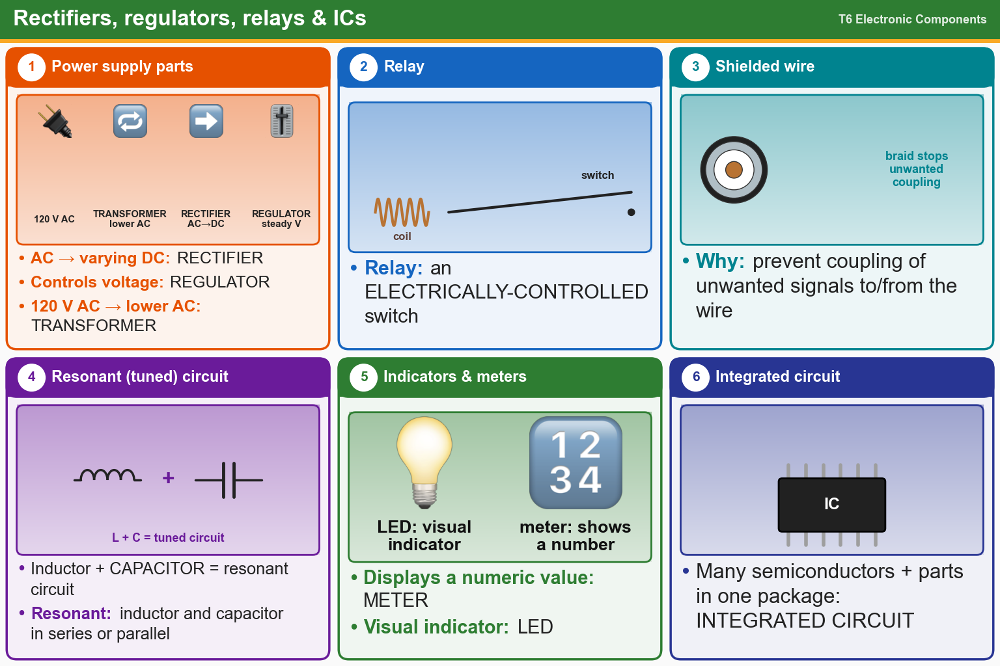

💡 Transformer lowers AC, rectifier turns AC into DC, regulator holds the voltage steady. L + C = tuned circuit.
Press Check on any question to see if you're right (it won't show the answer), or Grade at the bottom to grade the whole page.
T6D01
Which of the following devices or circuits changes an alternating current into a varying direct current signal?
✘A.Transformer
✘B.Reflector
✘C.Amplifier
✔D.Rectifier
T6D05
What type of circuit controls the amount of voltage from a power supply?
✔A.Regulator
✘B.Oscillator
✘C.Phase inverter
✘D.Filter
T6D06
What component changes 120 V AC power to a lower AC voltage for other uses?
✘A.Transistor
✘B.Diode
✔C.Transformer
✘D.Variable capacitor
T6D02
What is a relay?
✘A.An inverting amplifier
✘B.A current-controlled amplifier
✘C.A pass transistor
✔D.An electrically-controlled switch
T6D03
Which of the following is a reason to use shielded wire?
✘A.To increase the current carrying capability of the wire
✘B.To reduce receiver overload
✔C.To prevent coupling of unwanted signals to or from the wire
✘D.To decrease the resistance of DC power connections
T6D08
Which of the following is combined with an inductor to make a resonant circuit?
✔A.Capacitor
✘B.Potentiometer
✘C.Zener diode
✘D.Resistor
T6D11
Which of the following is a resonant or tuned circuit?
✘A.A circuit designed to provide high-fidelity audio
✘B.A linear voltage regulator
✔C.An inductor and a capacitor in series or parallel
✘D.A resistor circuit used for reducing standing wave ratio
T6D04
Which of the following displays an electrical quantity as a numeric value?
✘A.Relay
✘B.Potentiometer
✘C.Transistor
✔D.Meter
T6D07
Which of the following is commonly used as a visual indicator?
✘A.Zener diode
✔B.LED
✘C.FET
✘D.All these choices are correct
T6D09
What is the name of a device that combines several semiconductors and other components into one package?
✔A.Integrated circuit
✘B.Transducer
✘C.Multi-pole relay
✘D.Transformer